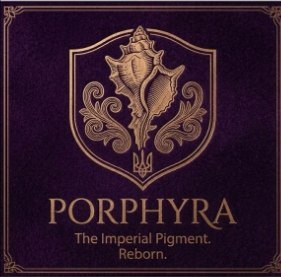
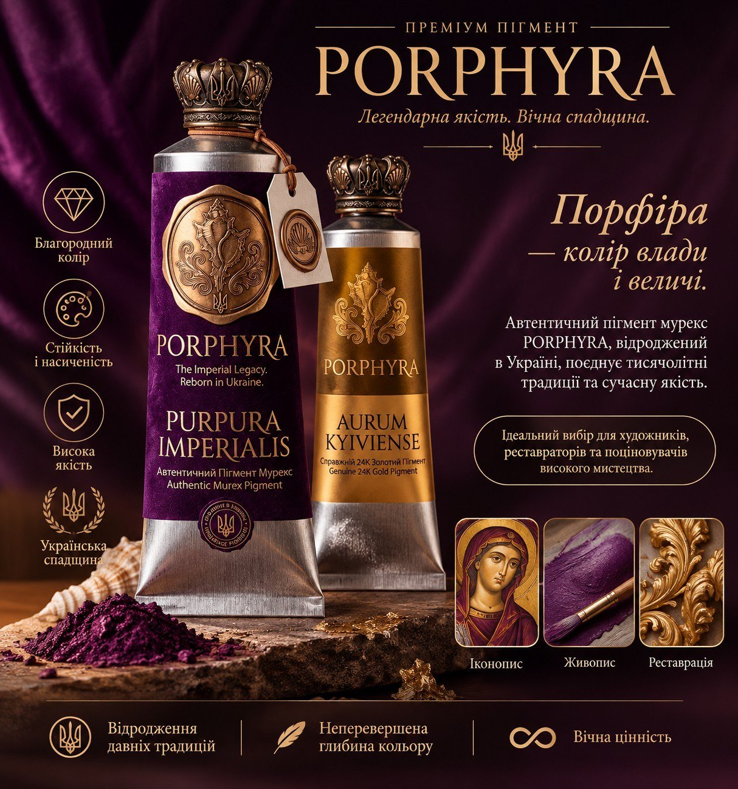
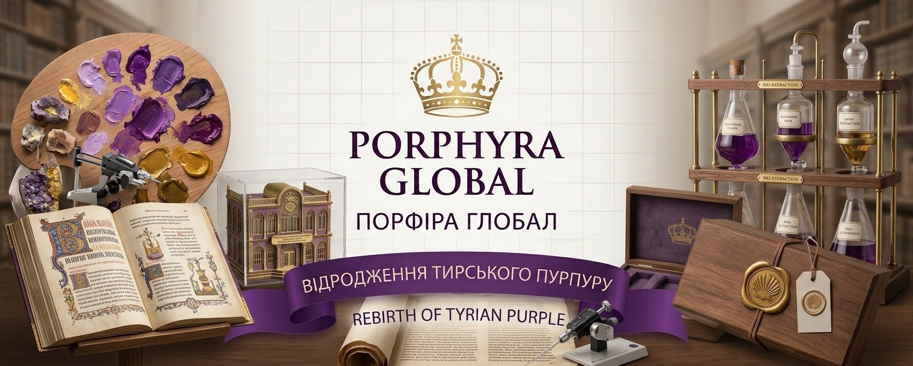
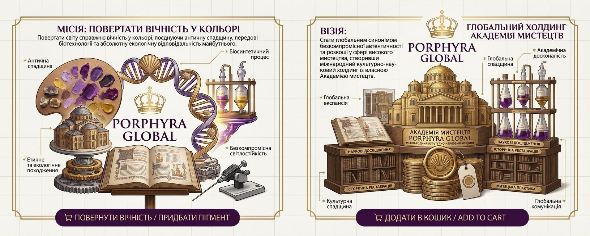

Про нас
Ми не просто створюємо фарби. Ми відроджуємо легенду.
PORPHYRA GLOBAL — це перша у світі компанія, яка поєднала глибинну спадщину античності з найновішими досягненнями біотехнологій, щоб повернути світові мистецтва автентичний Тирський пурпур. Впродовж тисячоліть цей колір був прерогативою імператорів, символом божественної влади та найвищої розкоші. Його секрет вважався втраченим. Сьогодні ми не лише відтворили його унікальну іридесцентну глибину та світлостійкість, але й зробили це безкомпромісно етичним та екологічним шляхом — у лабораторії, без шкоди для природи.
Наші біотехнологічні пігменти створені для професійних художників, реставраторів та колекціонерів, які прагнуть до безкомпромісної автентичності та створення безсмертних творів мистецтва.

Наша продукція
Автентичний пігмент мурекс PORPHYRA, відроджений в Україні: Purpura Imperialis і Aurum Kyiviense. Ідеальний вибір для художників, реставраторів та поціновувачів високого мистецтва.

Історія PORPHYRA GLOBAL
Історія PORPHYRA GLOBAL розпочалася із захоплення найрідкіснішою та найзагадковішою барвою в історії людства — античним Тирським пурпуром. Протягом тисячоліть цей колір слугував символом імператорської величі та найвищої розкоші, проте секрет його створення вважався назавжди втраченим у віках.
Об’єднавши глибинну мистецьку спадщину з передовими біотехнологіями, ми обрали шлях відродження, а не імітації. Нам вдалося відтворити молекулярну формулу легендарного пігменту в лабораторних умовах, зробивши його абсолютно етичним, екологічним та ідентичним античним зразкам.
Сьогодні PORPHYRA GLOBAL створює елітарні фарби для тих, хто прагне до безкомпромісної автентичності. Ми поєднуємо науковий прорив із традиціями високого мистецтва, повертаючи видатним полотнам їхню сакральну цінність та вічну глибину.
Місія і візія
